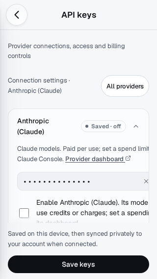
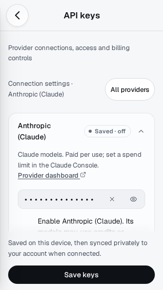
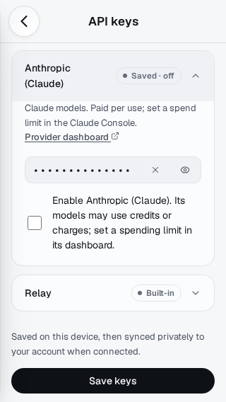
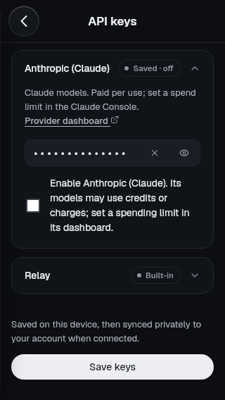
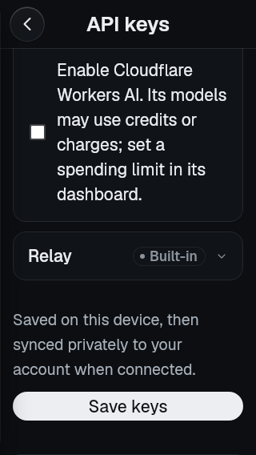
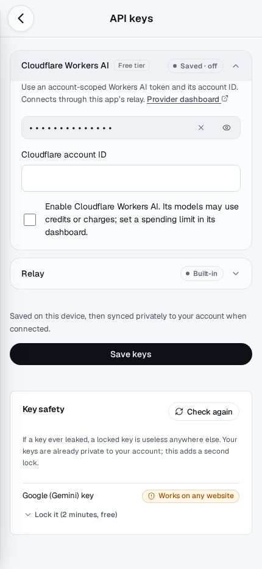

Provider Settings: text stays inside the card.
Narrow CP2 correction only, draft PR54. At320px the old286px card contained an implicit328px grid track; help, permission text and key controls ran past the right edge. A single Canvas-scoped minmax(0,1fr) track fixes the source of the overflow without hiding it.
Actual synthetic Chromium/WebKit captures. Initial view compared directly; additional scrolled views show the full control/label. Tests check every rendered text fragment and control against the visible card, not only document scrollWidth. Both engines:320/390/430, Light/Dark, Anthropic and Cloudflare,100%/150% text (24 cases per engine).150% is a synthetic font-scale check, not a physical iPhone/Dynamic Type result.
Exact source/image provenance · Original provider review

Before · reviewed73071e2 · Chromium320×568 Light
After · initial viewport · Chromium320×568 Light
After · card scrolled into view · Chromium320×568 Light
After · WebKit320×568 Dark
Long provider name · synthetic150% text · WebKit320×568 Dark · permission scrolled into view
Long provider name · Chromium430×932 LightReview check: at320px read the entire provider hint and enable-provider description, then reach Reveal/Clear, checkbox and Save keys. Verify All providers preserves unsaved edits and Back/Forward returns correctly. No new auth/network behavior, no merge/deploy and no CP3. Physical Safari/PWA/VoiceOver remain unverified.